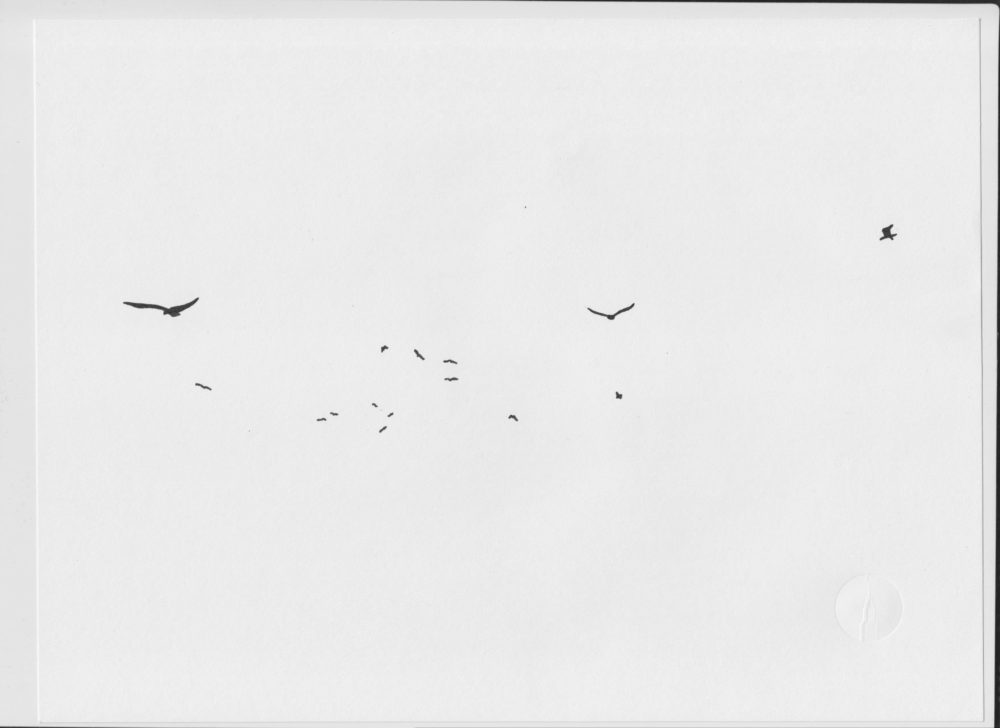

Svava Jóhannsdóttir | Noise Aesthetics
Unpredictability within isomorphism—from two dimensions to three and four. Imitating natural phenomenons by manipulating noise patterns. Simulations and geometry deformation.
Nature's noise patterns extracted and applied to a visual representation. Drawing from Galleri's Grandi 2014 exhibition. Ink on paper. ANSI A (letter).

An ongoing study.